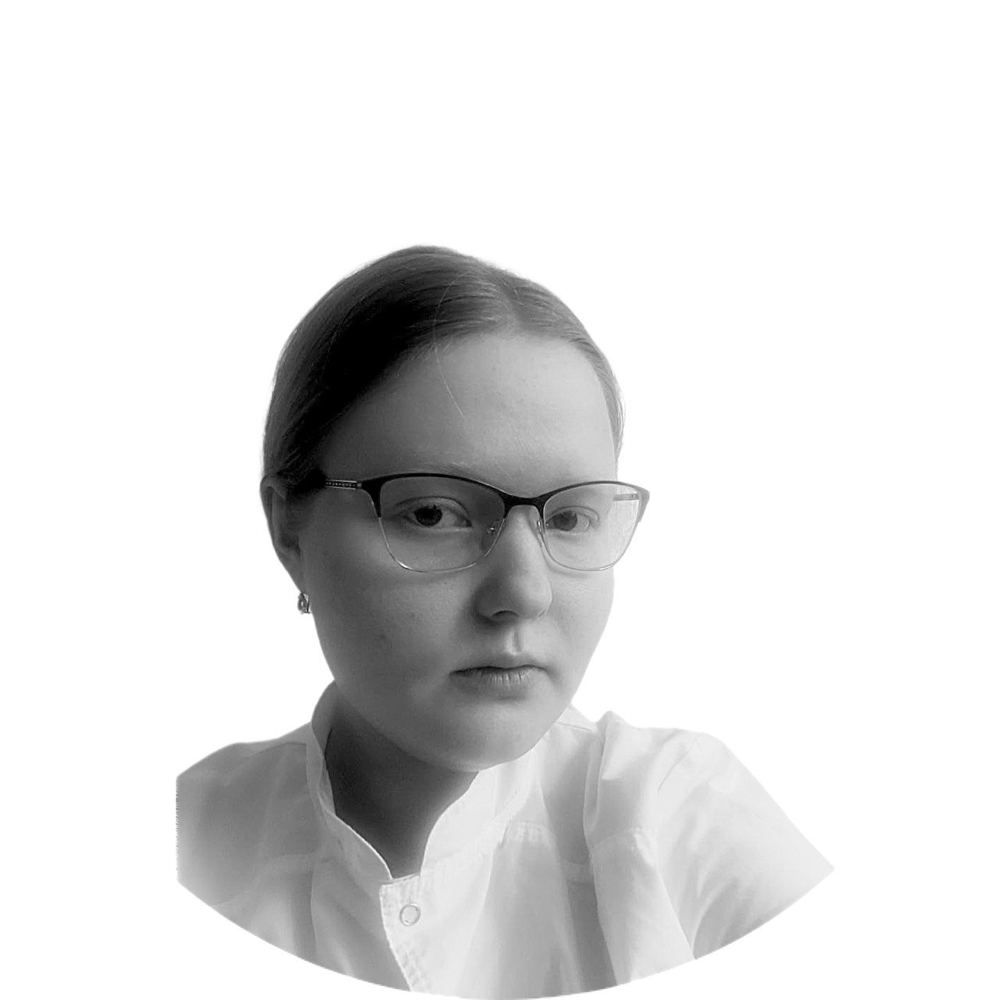

Чёрный Артем Владимирович - трекер проекта
Первый МГМУ им. И.М. Сеченова
Занимается научной деятельностью на кафедре инфекционных болезней Сеченовского Университета, выступает на конференциях, где представляет свои исследовательские работы, докладывает клинические случаи, публикует научные тезисы.
Работает в ГКБ им. М.П. Кончаловского ДЗМ в терапевтическом отделении.
Имеет почетный знак "За мужество и доблесть в борьбе с COVID-19" Москва 2020-2021.
Именной стипендиат Правительства Москвы.

Абашева Дарья Денисовна
Первый МГМУ им. И.М. Сеченова
Резидент СНК по патологической анатомии.
Занимается научной деятельностью в сфере патанатомии, репродуктологии, акушерства и гинекологии.
Домнин Илья Андреевич
НИЯУ МИФИ
Занимается научной деятельностью в области экологии и IT, публикует тезисы, участвует в научных конференциях и конкурсах.
Стажер АО ”ГНЦ РФ ФЭИ”.
Преподает курсы Python Start и Python Pro в ООО”Алгоритмика”.
Является победителем XXI городского конкурса стипендий имени А.А. Сотникова.
Дубкова Лариса Николаевна
Первый МГМУ им. И.М. Сеченова
Принимает активное участие в междисциплинарных консилиумах, посещает СНК по кардиологии.
В свободное от учебы время работает в НМИЦ нейрохирургии им. ак. Н.Н. Бурденко м/с в хирургическом отделении.
Любимова Екатерина Алексеевна
Первый МГМУ им. И.М. Сеченова
Соавтор 2 научных статей на тему Covid-2019.
Участник школы мастерства и СНК по персонализированной кардиологии.
Работает ассистентом в клинике "Чайка".
312 часов волонтерской деятельности (волонтер регистрации, службы протокола и медицинской службы на мероприятии).
Строжкова Валерия Алексеевна
ОмГМУ
Куратор отдела научно-исследовательской работы студентов НОМУС.
Призер межвузовского конкурса "Научный батл", ежегодно принимает участие во Всероссийской научной сессии молодых ученых и студентов.
Имеет публикацию в сборнике статей "Научный вестник".
Тимофеева Юлия Сергеевна
ОрГМУ
Принимает активное участие в междисциплинарных консилиумах, посещает СНК по факультетской педиатрии, а также оперативной хирургии и клинической анатомии.
Участвует в составлении статей, докладов.
В свободное от учебы время работает в отделении анастезиологии и реанимации РСЦ для больных с ОКС и ПСО N1 в ГАУЗ «ГКБ им. Н. И. Пирогова».
Осуществляет волонтерскую помощь в медицинских организациях.
Фомина Марина Сергеевна
ОмГМУ
Член совета научного общества молодых учёных и студентов ОмГМУ.
Занимается научной деятельностью в сфере дерматологии.
Холодная Анастасия Николаевна
МФТИ
Кандидат медицинских наук, врач-инфеционист.
Ассистент кафедры инфекционных болезней и эпидемиологии ПСПбГМУ им. И.П. Павлова.
Черных Дарья Андреевна
ОмГМУ
Имеет публикации в сборнике научных статей.
Призёр конкурса стендовых докладов, призёр конкурса плакатов «Здоровый образ жизни», призёр II Международного учебно-исследовательского конкурса Youth for science 2020, призёр Олимпиады по математике и статистике, участник V Всероссийского открытого конкурса студенческих работ «Философия в художественных образах».
Имеет благодарственные письма Министерства здравоохранения Омской области за волонтёрскую деятельность.